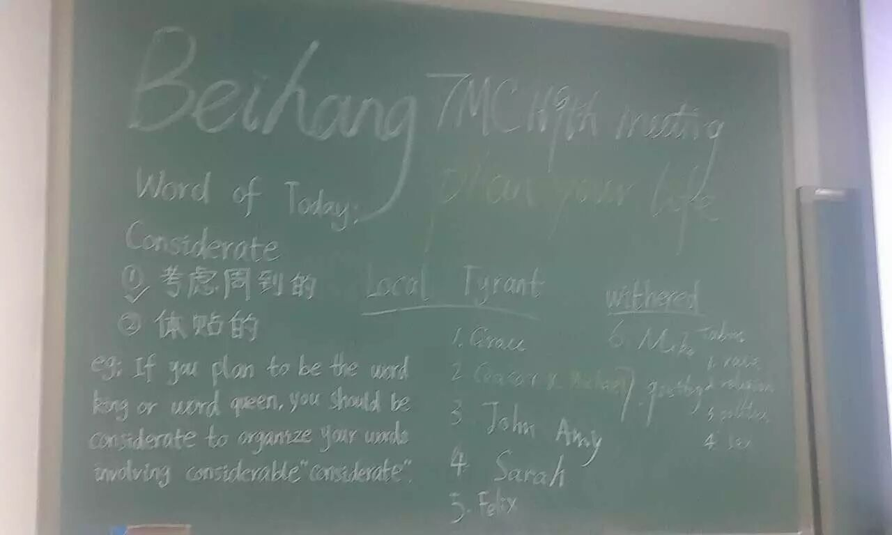
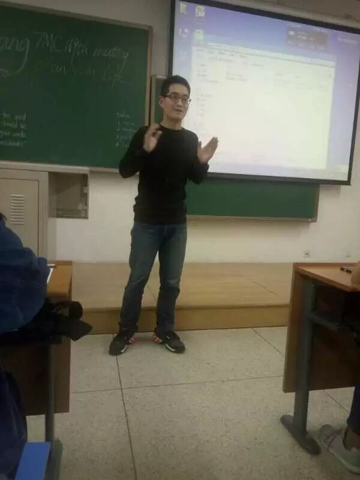
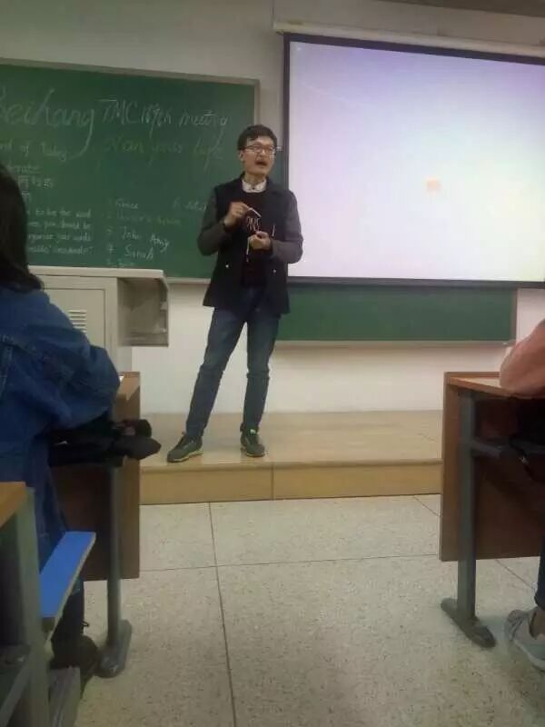
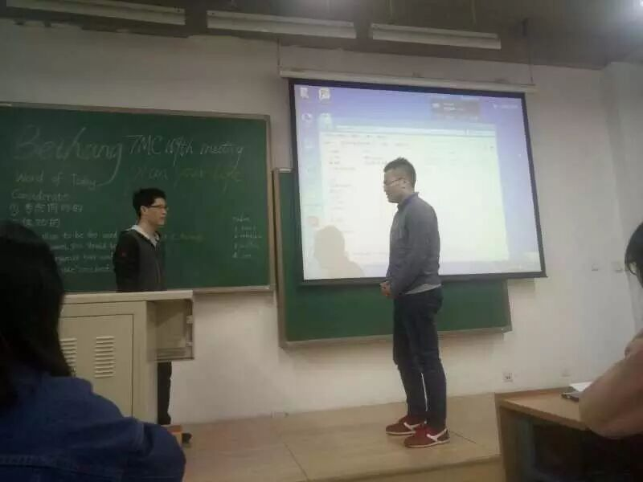
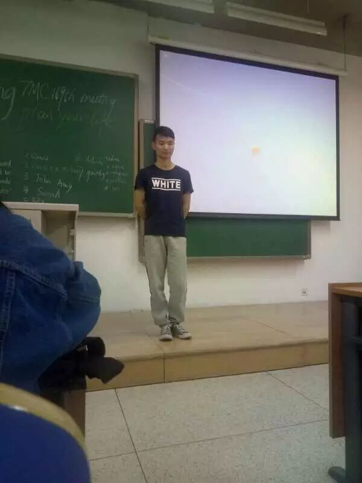
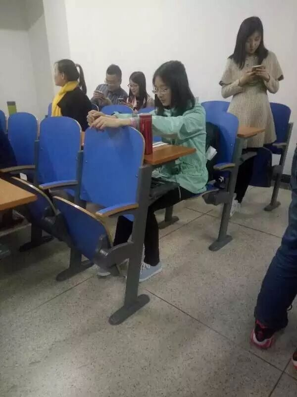
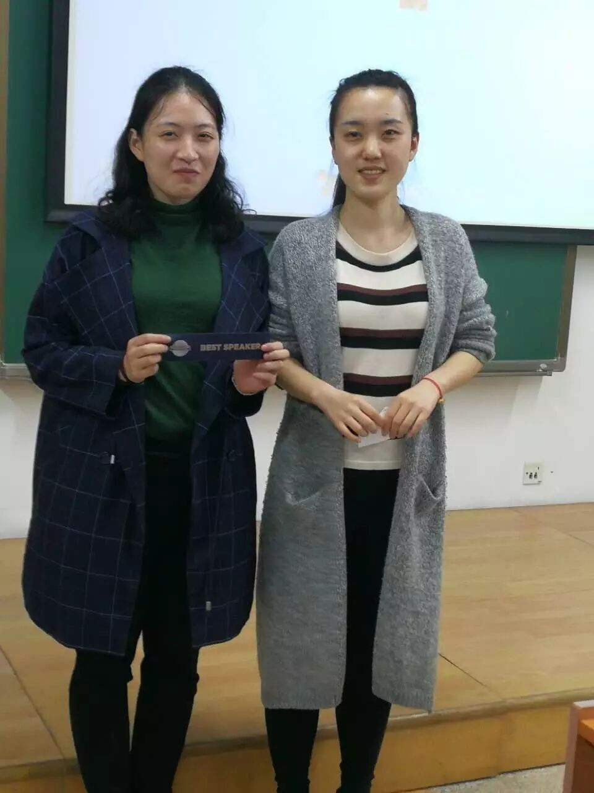
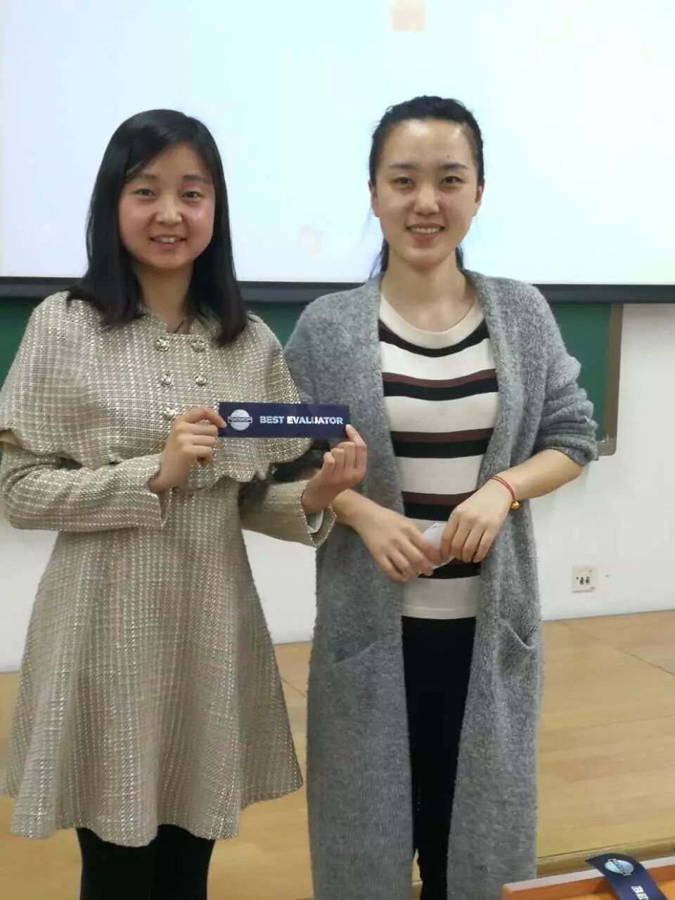
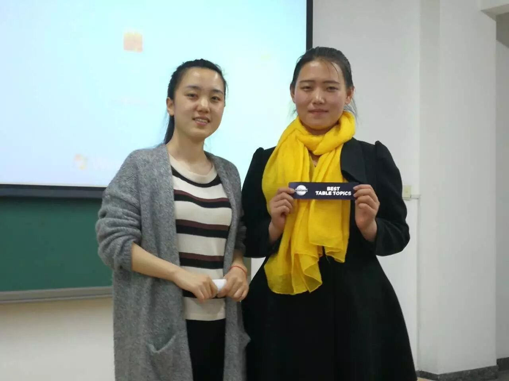
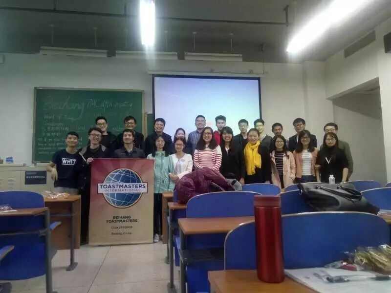

Recently, One friend of mine have been told me that she(he) has a plan for this year, and I am very happy at that time.

Just like Table Topic Master Milton says, “almost every one wants to be successful, how can we succeed? I think in order to achieve our goals, we must make a good life plan for ourselves. Plan is very important, if the direction is wrong,everything is wrong! So how to correctly plan our life? I think some routine steps we can follow it.
Understand ourselves deeply. The sooner we understand our interests,hobbies and personality the better we can do it for ourselves.
According to our current situation and resources we have and then find our appropriate career.
Specify our plans that we can achieve through hard working,including long-term plans and short-term plans.
Action! Only action can change our situation(the status quo).
Feedback and adjustment, when we find our actions have deviation with our plan, we should modify our plan in time.
To achieve one small goal and another,just like to be brave as a Table Topic Session actor and ultimately we will achieve a big goal.”

Actually, I don’t know what is success meaning? But I think we should have a considerate plan for our life, because we can ordinary,not mediocre!
At the Table Topic Session: Grace says if she have a prize of 5 million dollars, she will helps the poor and invest for more money, how kind-hearted she is!
Some people regard money、 house、car as a sign of success and as the ultimate goal of their own life, how do you see such a goal? How do you see success?

Mike says he have loss a lot of money and work experience when he chose to be a doctor,but he will never regret it,he wants to be a scientist from deeply in heart. No pains,No gains! Dearm give our a colorful life.
When graduation, both of you and your boyfriend or your girlfriend are find a decent job in different cities, how do your sovle this problem?

Ceasar and Michael have been delivered their excellent speech, and i know they will come to our meeting next time. Expecting your next speech.Let you plan your rest of life now, how will you design it? Share us some details.

Gasby have been told us that he has a dream to become a super hero at his childhood, so he says he will running it now! We are looking forward to you save us.CC1 The Ice Breaker
No More Silence
May is a quiet girl, she always quiet to everything,she wants something but she never ask.She says she wants to be a brave and sunshin girl and no more silence,she will forgive the others fault and keep going with her dream.
But she is so nervous when she delivered her speech and forget every words.
Finally, she made it! We are looking forword to your next speech,cheer up!

CC2 Organize Your Speech
Grown-up Essence
Fiona have been prepareing enough for her speech, and she always smileing to the audience,if you have been attend our meeting,you will like her speech.she share her grown-up experience with us.I think it will works on me.
Best Prepare Speaker:

Best Speech Evaluator:

Best Table Topic Speaker:

Finally! Show one photo of our family.